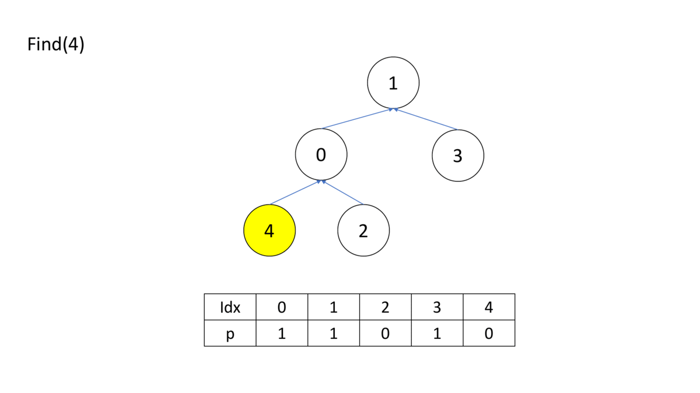
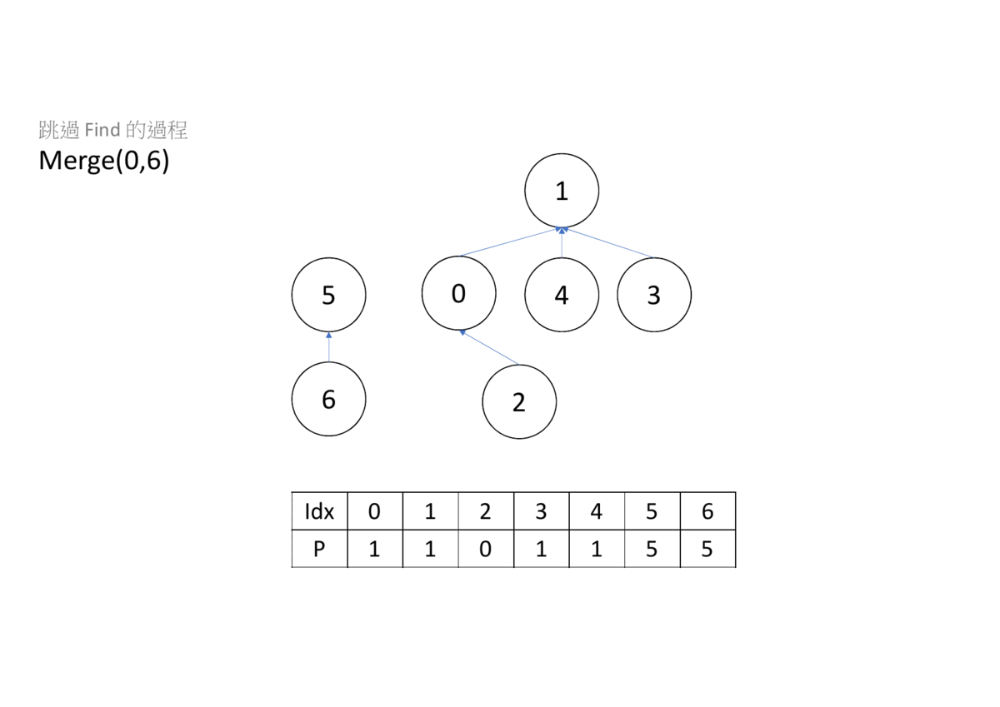

並查集
並查集是一種樹狀結構，他支援兩件事
- 查詢所隸屬集合
- 合併兩個集合
我們把集合轉化成樹，一顆樹代表一個集合，樹根代表集合的老大，查詢隸屬集合就回傳樹根是誰（一個樹餔可能有兩顆樹根吧），合併的時侯，就把一顆樹的樹根只到另一顆，以下為詳細的描述。
初始
一開始的時候，每個點自成一個集合，所以把樹根都設為自己。
查詢
查詢的時候，要查到樹根為自己的點，為止否則的話就要繼續查。
1 2 3 4 5 6 | |
狀態壓縮：在合併之後原本被指向的樹根就沒用了，我們可以一邊做查詢時，一邊做更新。
1 2 3 4 5 6 | |

合併
找出兩個點的樹根，將一個樹根合併指到另一個樹根。
1 2 3 4 5 6 7 8 | |

啟發式合併：建立一個 代表樹的高度，亦是元素最大遞迴次數， 一開始為 。再來，我們每次都讓高度小的高度大的合併，如果遇到高度一樣的，就讓合併別人的樹高度加 。如果要把高度變為 ，則至少需要 個點，由此推出 N 個點所形成最高之高度為 。
1 2 3 4 5 6 7 8 9 10 11 12 13 14 15 16 | |
也可以維護並查集的個數，個數大的合併個數小的並查集。
1 2 3 4 5 6 7 8 9 10 11 | |
完整程式碼
1 2 3 4 5 6 7 8 9 10 11 12 13 14 15 16 17 18 19 20 21 22 23 24 25 26 27 28 29 30 31 | |
相關題目
UVa 10608 - Friends
給定 個人的朋友關係，如果兩個人是朋友，他們在同一個朋友圈，問有幾個人在最大的朋友圈。
UVa 11503 - Virtual Friends
給定 個人的朋友關係，如果兩個人是朋友，問兩個人成為新朋友，他們的朋友圈總共有幾個人。
這兩題題目相似，都要維護每個集合的個數，最後答案會根據每個集合的數量計算出來。
UVa 10608 這題需要注意最大的朋友圈可能不只一個，如果有多個集合大小一樣，需要累加答案。
UVa 11503 給定朋友的名字，在實作上，會利用 map 將名字對應數字再做計算。